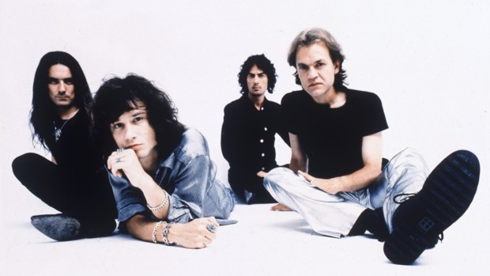

|  |
Fue una banda española de rock originaria de Zaragoza, protagonista de uno de los fenómenos musicales más importantes de los últimos años. La pasión despertada entre sus seguidores y un prestigio creciente más allá su país les convirtió, hasta su disolución a mediados de 1996, en la banda de rock española más importante de las dos últimas décadas. Formada inicialmente por Juan Valdivia (Segovia, 1965; guitarra), Joaquín Cardiel (Zaragoza, 1965; bajo) Pedro Andreu (Zaragoza, 1966; batería) y liderados por la controvertida personalidad de Enrique Bunbury (Enrique Ortiz de Landázaru, Zaragoza, 1967; voz), debutaron discográficamente en 1987 con un single que llevaba por título Héroe de leyenda, anticipo del álbum El mar no cesa, con el sello EMI, en 1988. Pese a las críticas recibidas por parte de la prensa especializada, que los acusaba de banales y pretenciosos, comparando la actitud de su cantante Enrique Bunbury con una mala copia de Jim Morrison (The Doors), la aceptación de un amplio sector juvenil (admirador de sus directos y de la ambigüedad de las letras de sus canciones) convirtió a Héroes del Silencio en el grupo revelación del momento. |